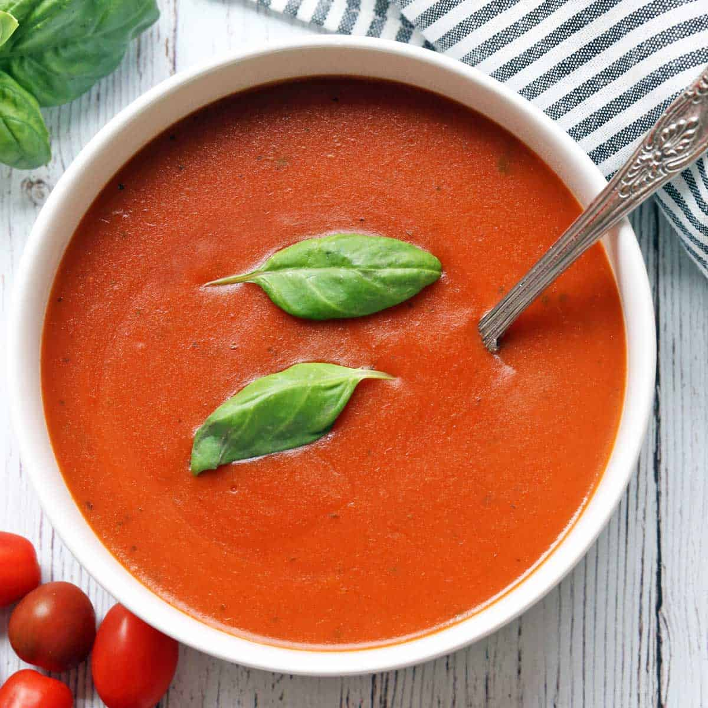

Tomato soup

Prep time: 5min Cook time: 30 mins
Total time: 35mins Servings: 6
Ingredients:
- 4 cups chopped fresh tomatoes
- 1 slice onion
- 4 cloves garlic
- 2 cups of chicken broth
- 2 tablespoons butter
- 2 tablespoons all-purpose flour
- 1 teaspoon salt
- 2 teaspoons white sugar
Steps
- Gather all ingredients
- In a stockpot, over medium heat, combine the tomatoes, large slice of onion, garlic cloves, and chicken broth. Bring to a boil, and gently boil for about 20 minutes to blend all of the flavors.
- Remove from heat and run the mixture through a food mill into a large bowl, or pan. Discard any stuff left over in the food mill.
- In the now empty stockpot, melt the butter over medium heat. Stir in the flour to make a roux, cooking until the roux is a medium brown.
- Gradually whisk in a bit of the tomato mixture, so that no lumps form, then stir in the rest.
- Season with sugar and salt, and adjust to taste.